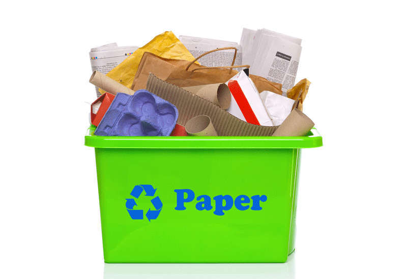
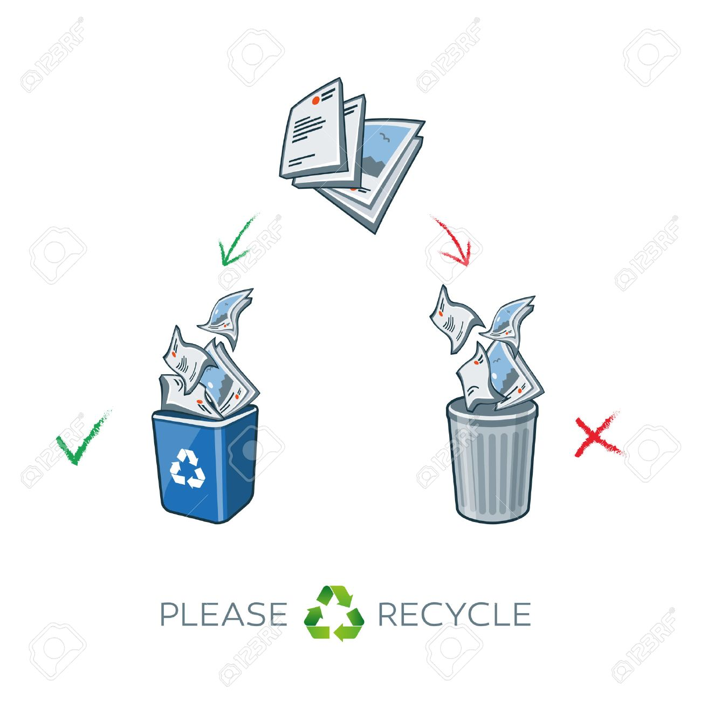
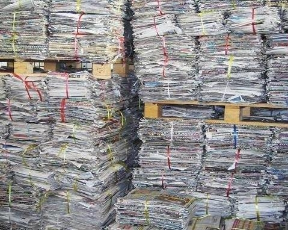
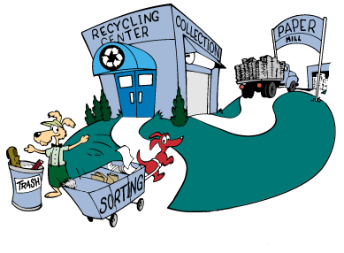
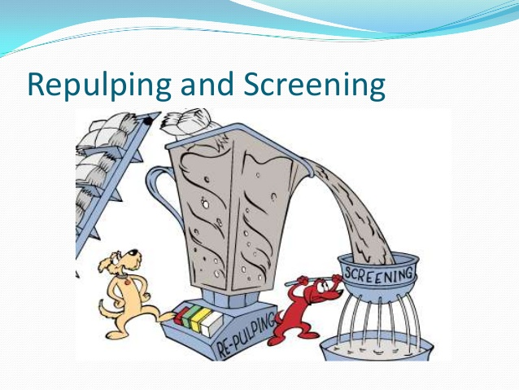
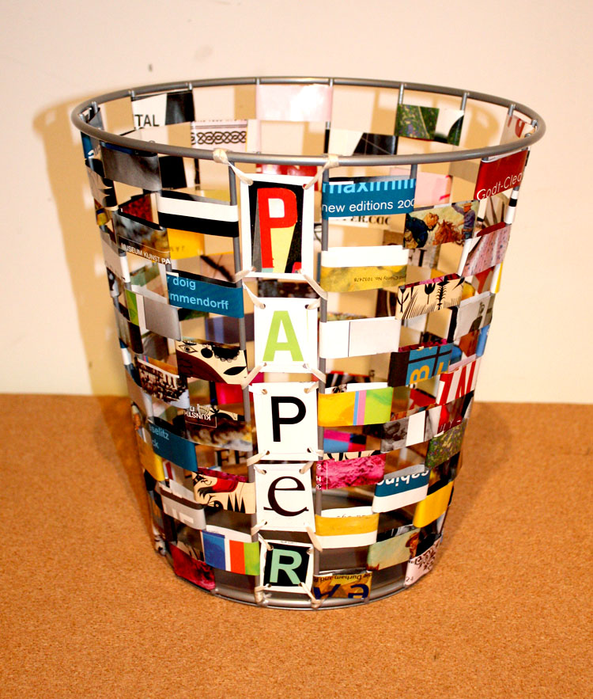

|
RECYCLEAIDTOGETHER WE CAN MAKE A DIFFERENCE |
|
RECYCLEAIDTOGETHER WE CAN MAKE A DIFFERENCE |
PAPER RECYCLING
|  |  |
Paper recycling pertains to the processes of reprocessing waste paper for reuse. Waste papers are either obtained from paper mill paper scraps, discarded paper materials, and waste paper material discarded after consumer use. Examples of the commonly known papers recycled are old newspapers and magazines.
Other forms like corrugated, wrapping, and packaging papers among other types of paper are usually checked for recycling suitability before the process. The papers are collected from the waste locations then sent to paper recycling facilities. The subtopics below provide a detailed explanation of the steps used in paper recycling.
Paper is one the material that can be easily recycled. Recycled paper is paper that was made from paper and paper products that has already been used and recovered. People need to take their time and save the paper products so that they can be recycled. Paper recycling begins with us. We all need to show our interest in recycling to make it successful.
The Paper recycling activity can start at school, college, home, office, local community and even at drop off centers. We all need to understand what products can be recycled before staring the recycling process and how to properly prepare them for the recycling.
Process of Paper Recycling
The step by step process of Paper Recycling
Collection
|
Recyclers and paper merchants collect the paper materials from collection points such as trash bins, paper stores, paper scrap yards, and commercial outlets that generate paper waste. Paper is collected from the bin and deposited in the large recycling container along with the paper from the other recycle bins. After collection, they are then measured, graded for quality, and hauled to recycling paper mill facilities.
|
 |
Sorting
|
Once accepted at the recycling facility, the papers are further sorted based on quantity and paper value by assessing the materials that were used to make the paper. In most cases, the papers are classified according to their surface treatment and structure.
|
 |
Shredding and Pulping
|
Once sorting is finished, the next step involves shredding followed with pulping. Shredding is done to break down the paper materials into small bits. After the material is finely shredded to bits, it is mixed with water and chemicals to breakdown the paper fiber materials. It turns the paper materials into a slurry substance, a process termed as pulping.
|
 |
Finishing for reuse
|
This is the final stage of paper recycling. The cleaned pulp is blended with new production materials after which, it is put to dry on a flat conveyor belt and heated cylindrical surfaces. As the pulp dries, it is passed through an automated machine that presses out excess water. By the time the pulp is solid, it is passed through steam heated cylinders that facilitates the formation of flattened long rolls of continuous sheets of paper.
|
 |